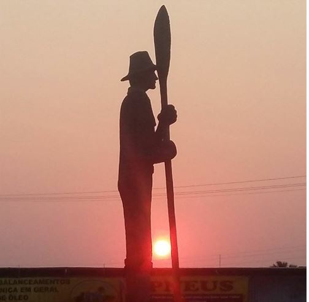
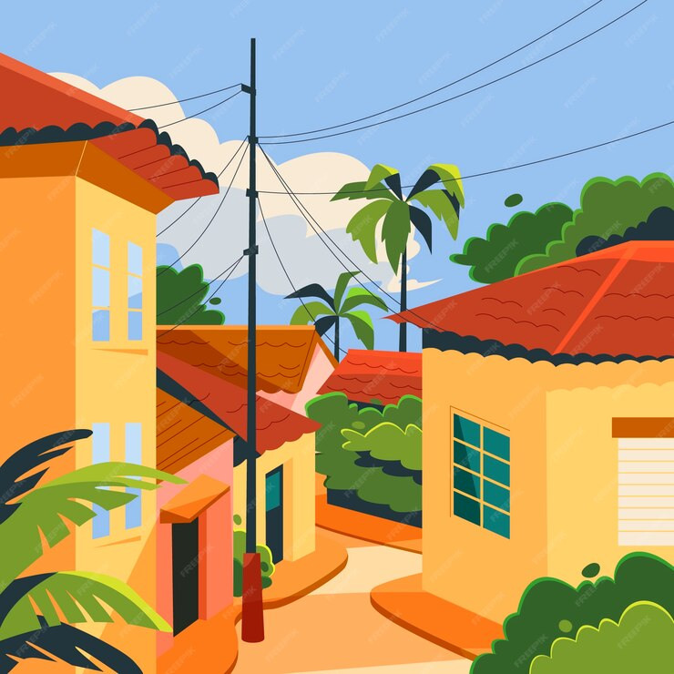
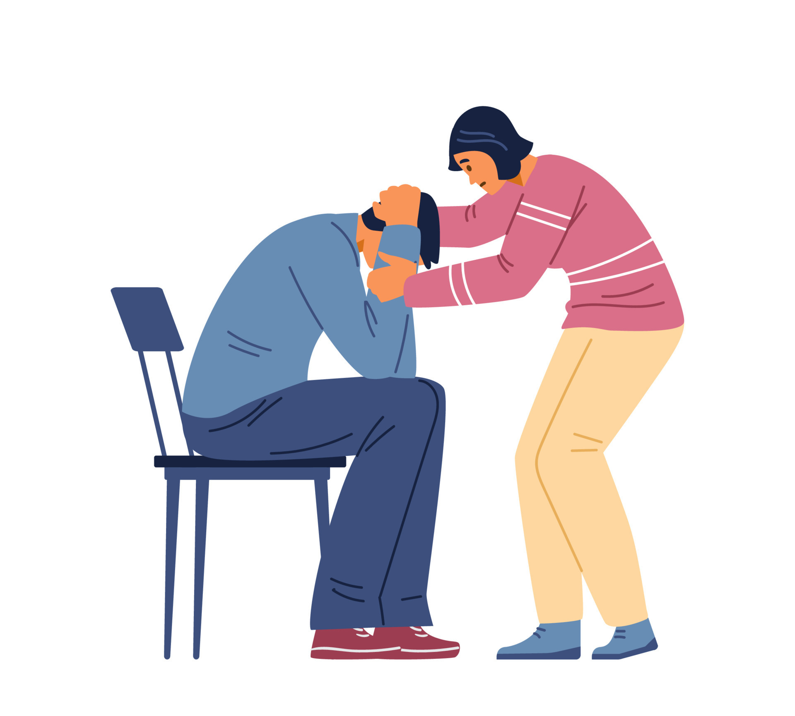

Em um belo dia, você estava viajando pelas praias de Ubatuba, quando se deparou com uma pequena concha na areia.

Você ignorou a concha e seguiu seu dia normalmente.

Ao pegar a concha, você escuta um leve susurro. Uma voz misteriosa lhe falou sobre um tesouro enterrado na estátua do caiçara.
Ao chegar na estátua, você se depara com uma pá e um monte de terra. Alguém ja havia encontrado o tesouro.

Você acha que não está pronto para uma aventura tão grande, então decide ir para sua casa.
Você encontrou um bilhete perto da pá. Nele estava escrito que o tesouro era apenas um cupom de desconto nos supermercados Semar. O tesouro era apenas uma estratégia de marketing..
